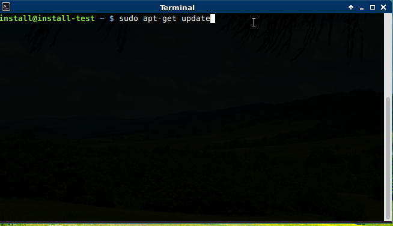

Erro na atualização do sistema
O problema
O sistema não consegue instalar as atualizações. No Windows, o Windows Update fica parado na mesma porcentagem ou mostra um código de erro começando com 0x8. No Linux, o gerenciador de pacotes (o programa que instala e atualiza os programas, como o apt no Ubuntu) mostra erros como "Could not get lock" ou "Failed to fetch".
Possíveis causas
Pouco espaço em disco, conexão instável, arquivos de atualização corrompidos, serviços parados, data do sistema errada, antivírus bloqueando a instalação ou, no Linux, outra instalação em andamento ao mesmo tempo e repositórios (servidores de onde os pacotes são baixados) fora do ar.

Solução no Windows
Reinicie e tente de novo. Confira se o disco C: tem pelo menos 15 GB livres (veja Espaço em disco ficando cheio sozinho) e se a data está certa (veja Relógio do sistema incorreto). Depois, rode a solução de problemas em Configurações > Sistema > Solução de problemas > Outras soluções de problemas > Windows Update.
Se continuar, limpe as atualizações baixadas executando no Prompt de Comando como administrador
net stop wuauserv, net stop bits, ren C:\Windows\SoftwareDistribution
SoftwareDistribution.old, net start wuauserv e net start bits. Quando uma
atualização específica sempre falha, procure o código dela (começa com KB) no Catálogo do Microsoft Update
e instale manualmente.
Solução no Linux
O erro "Could not get lock" significa que outro programa, como a atualização automática, está usando o
apt: espere alguns minutos. Se a atualização foi interrompida, execute sudo dpkg --configure -a
e sudo apt install --fix-broken.
Para erros "Failed to fetch", confira a internet e a data, e troque o servidor de download em Programas e
Atualizações > Baixar de > Servidor principal. Depois, atualize com sudo apt update
(que baixa a lista de pacotes) e sudo apt upgrade (que instala as atualizações).
Saiba mais
Pesquise um dos tutoriais em vídeo abaixo: